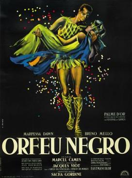

Marcel Camus
1959
100 minutes
This is the film you always get confused with Black Narcissus, which is about a bunch of horny nuns but somehow isn't a sex comedy. This one is essentially a retelling of the Orpheus myth from Greek mythology, except this time with Brazilian music and a Carnival setting. It's really not a bad re-telling of the myth and you can imagine the music would have really sold this back in the day. At the end, Orpheus' guitar gets picked up by a couple of children (tag-alongs throughout the film) who believe that Orpheus playing the guitar is what causes the sun to rise. One of the boys plays the guitar, and the sun indeed rises (perhaps because of it, perhaps not) and another little girl gives him a flower and they dance together. It's cheesy and melodramatic and sweet and hits enough chords of what passes for religious belief in your shriveled little heart that it makes you bawl your eyes out.
In a similar way, even the thought of the Sandman comic "Dream of a Thousand Cats" or its animated version has a similar effect on you, especially having lost your own darling part-Siamese cat very shortly after losing your wife. You can make yourself teary-eyed just thinking about it. In that story, a wandering prophet Siamese cat preaches to a bunch of stray cats and pet cats who have snuck out of their homes to hear her message, including the tabby-kitten protagonist. She tries to convince them that dreams are magical and we dream the world into being the way it is and that once cats ruled the world and chased humans as though they were nothing but amusing prey. The prey-humans were eventually able to dream of a different world where they were the masters and the world changed overnight. But cats could do the same and once again be on top if enough of them could believe her words and dream the same thing. The cat audience is amused but skeptical about anyone getting even a mere thousand cats to do anything at the same time, but the tabby kitten earnestly declares, "Mistress, I believe!" and goes home to dream exactly that. Boom. Waterworks every time. You can barely describe the story without tears flowing.
Not long after your wife died, you went to your first opera without her, or at least virtually attended a simulcast of one at the revival theater, which simulcasts some operas from the Met's season. It was Matthew Aucoin's modern take on the Orpheus myth, simply entitled Eurydice. Once again you found yourself sniffling and bawling into your popcorn at the ending. Opera tends to make you emotional in the same way that John Wayne movies would make your stepfather sniffle and reach for a kleenex box. This particular one, while not one of your beloved favorites, was maybe a bit too on target for someone so freshly widowed to be seeing alone.
Don't feel bad, this is one of the main reasons to watch movies. We can't snark on everything all the time, that would get boring. Time to mop up and move on once again.
Time to choose something different: